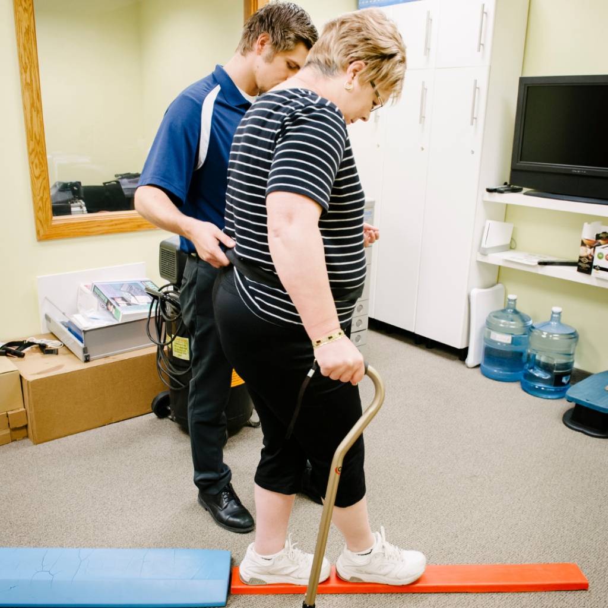
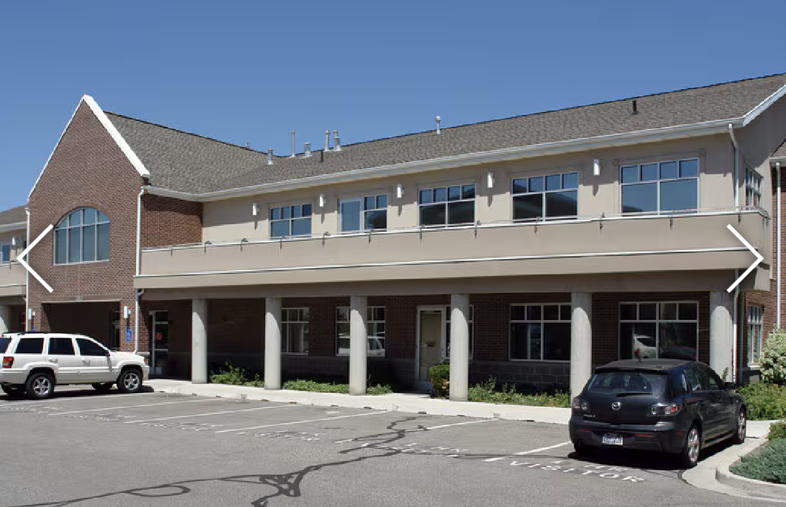

Movement & mobility
Work on range of motion, balance, and the physical abilities that help you move through your day.
Support for movement, strength, and everyday life.
Cancer and its treatment can change how you feel and move. Our cancer-focused physical therapy program offers personalized support during treatment and recovery, with your everyday goals at the center of care.
Call 801.456.9898Physical therapy at Sandy Clinic

The services of Cancer Rehabilitation Centers (CRC) are now part of Utah Cancer Specialists. This specialized program brings physical therapy and individualized exercise together to support people affected by cancer.
Work on range of motion, balance, and the physical abilities that help you move through your day.
Explore exercise and energy-conservation strategies to help manage fatigue and support daily activity.
Receive support for pain, neuropathy, and other treatment-related challenges that affect everyday tasks.
Physical therapy can be part of care from diagnosis through treatment and into recovery. Your therapist works with your oncology team to shape an individualized approach around your needs.
Whether your goal is returning to a familiar routine or feeling more confident with daily activities, care begins with understanding what matters to you.
Talk through your health history, previous activity, current abilities, and personal goals with a physical therapist.
Your assessment guides a personalized program of physical therapy and exercise.
Recovery is different for everyone. Your care focuses on function and quality of life, without a one-size-fits-all timeline.
Call to schedule a physical therapy assessment, ask about insurance, or arrange a tour of the cancer rehabilitation facility.
7390 Creek Rd., Ste. 104Hours are Mountain Time. Please call to confirm availability.

No. The program supports patients during treatment as well as recovery. Talk with your care team about when physical therapy may be appropriate for you.
A physical therapist assesses your current function and discusses your activity history and goals. This helps establish a care plan tailored to you.
The clinic works with a variety of insurance plans. Coverage and benefits vary, so call before your visit to confirm your plan and any requirements.
Yes. Call the clinic to arrange a tour and learn more about the cancer-focused rehabilitation setting.